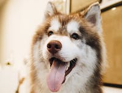
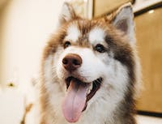

Green Sturgmar Zoo's swarm of Network Specialisters have made connections that no other species has been able to before. They are truly remarkable to watch them in their virtual and hard-wired environments. Just watch out for their blinky lights. You have been warned.
Species on Exhibit Today
 
